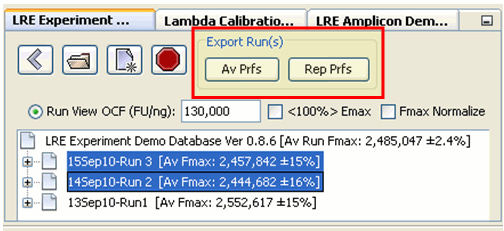
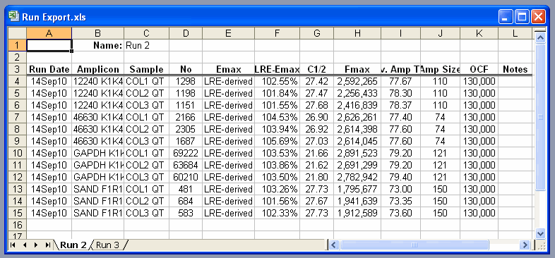
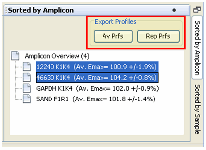
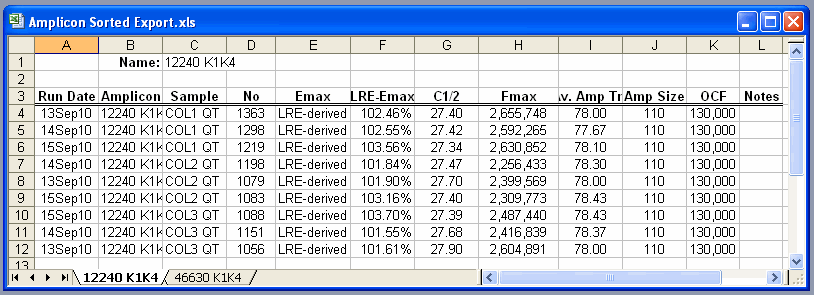
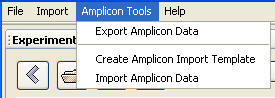
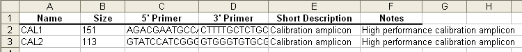

Profile data export is accomplished using MS Excel in which data is organized in a type-specific manor, sorted by Run, Amplicon or Sample, which are exported into individual work sheets. Within the explorer panel, profiles data can be exported by run using the export buttons next to the toolbar by first selecting the runs to be exported:

Note that multiple items can be exported by multiple selection using the shift or ctrl key in combination with the mouse button. Ctrl-A can also be used to select all of the items within a window. A dialog will then ask for an export file name and location, followed by opening the created Excel workbook in which each run's data is placed into an individual worksheet.

While this format is similar to conventional data export formats, a more functional format is to sort by either amplicon or sample using the sorting panels. This allows data generated across multiple runs to be grouped together. Similar to run data export, each sort panel provides export buttons:

Again a dialog will ask for an export file name and location, followed by opening the created Excel workbook in which data from each amplicon or sample is placed into an individual worksheet.

Import/export of amplicon data is provided under the "Amplicon Tool" menu item:

Amplicon data can be imported using an Excel template. Selecting the "Amplicon Import Template" will prompt you for a location and name of the template, which should then trigger the template to be automatically opened in MS Excel. Once data has been entered and the file saved, the data can be imported by selecting "Amplicon Import".
Selecting the "Amplicon Export" will prompt for a file name and location for the Excel workbook, which should then automatically open, presenting all of the amplicon data contained within the open amplicon database in the following format:
